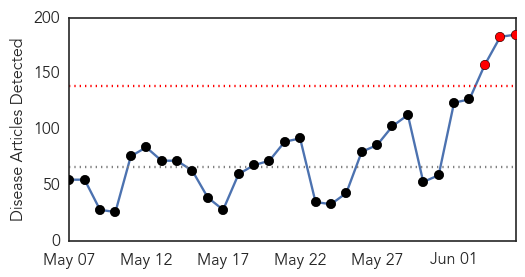
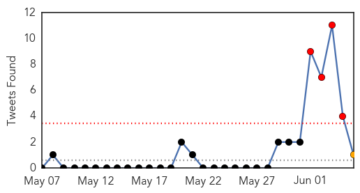

West Nile Virus
30-Day Web Trend
2 alerts, 3 warnings
30-Day Twitter Trend
0 alerts, 0 warnings

Article Locations
Article Confidences

Top Articles:
Top Tweets:
-
No tweets found for Jun 05, 2015
Unknown
30-Day Web Trend
3 alerts, 0 warnings

30-Day Twitter Trend
4 alerts, 1 warnings

Article Locations
Article Confidences
Top Articles:
- 1.000
- Mideast report new infection amid limited attention -
- 1.000
- Mideast continue to report MERS infections despite limited global attention - Xinhua
- 1.000
- Mideast continue to report MERS infections despite limited global attention
- 0.999
- Fourth death from MERS outbreak in South Korea
- 0.999
- S. Korea reports fourth death from MERS outbreak
- 0.999
- Park tours hospital with MERS patients
- 0.999
- Mers outbreak: South Korea quarantines more than 3,000 people as fears of deadly virus grow
- 0.999
- South Korea: 1,200 should stay home because of MERS-infected doctor
- 0.999
- MERS deaths continue in South Korea
- 0.999
- (4th LD) Park says utmost efforts under way to contain MERS
- 0.998
- South Korea Is Closing Hundreds of Schools as MERS Outbreak Spreads
- 0.998
- World health group to help South Korea contain disease
- 0.998
- Over 1,000 S Koreans under ...｜Society｜WCT
- 0.998
- MERS panics Chinese tourists
- 0.998
- South Korea declares 'war' on Mers virus as death toll rises
- 0.998
- South Korea reports fourth death from Mers as Seoul declares 'war on virus'
- 0.998
- South Korea Reports Nine New Cases in MERS Virus Outbreak
- 0.998
- (2nd LD) Experts say S. Korea can contain MERS with quarantine
- 0.998
- New MERS cases close over 700 schools in South Korea
- 0.998
- domain-b.com : S Korea schhols closed on MERS fears as five new cases reported
- 0.998
- (3rd LD) Park tours hospital with MERS patients
- 0.998
- S Korea closes schools in MERS outbreak
- 0.997
- South Korean Officials Butt Heads Over MERS Virus Contagion
- 0.997
- Seoul Mayor Declares 'War' on MERS after Fourth Death — Naharnet
- 0.997
- Park delays unification meeting due to MERS
- 0.997
- Park postpones unification meeting with N. Korea due to MERS
- 0.997
- Seoul mayor declares 'war' on Mers after fourth death
- 0.997
- Seoul mayor declares 'war' on MERS after fourth death
- 0.997
- Korean Air Force member at U.S. base has MERS
- 0.996
- Seoul mayor declares ‘war’ on MERS after fourth death
- 0.996
- Police to quarantine defiant suspected MERS carriers at medical centers
- 0.996
- Hygiene matters-INSIDE Korea JoongAng Daily
- 0.996
- More than 900 schools shut down after South Korea Mers outbreak
- 0.996
- (LEAD) Park delays unification meeting due to MERS
- 0.996
- (2nd LD) Park delays unification meeting due to MERS
- 0.995
- S. Korean Air Force Sergeant Diagnosed With Deadly MERS Virus
- 0.995
- Seoul mayor declares 'war' on MERS after fourth death
- 0.995
- MERS Virus Outbreak Alarm Grows After the Death of 4th Patient in South Korea
- 0.995
- WHO team to visit S. Korea for joint MERS investigation - Xinhua
- 0.994
- Seoul mayor declares 'war' on MERS after fourth death
- 0.994
- Viral Superspreader? How One Man Triggered A Deadly MERS Outbreak
- 0.994
- Police to quarantine defiant suspected MERS carriers at medical centers
- 0.993
- Fear in the air
- 0.993
- Fourth Person Dies as Outbreak Spreads
- 0.993
- The World On Arirang
- 0.992
- Low possibility of MERS outbreak in China
- 0.992
- WHO to send team to South Korea to respond to MERS outbreak
- 0.991
- South Korea’s quarantine law is in full effect
- 0.991
- S. Korea to brief diplomatic corps on MERS
- 0.990
- the superspreader concept
Showing top 50 articles...
Top Tweets:
- 0.794
- The WHO team on MERS to Rep of Korea will incl public health officers who previously handled other MERS outbreaks in the Middle East 메르스